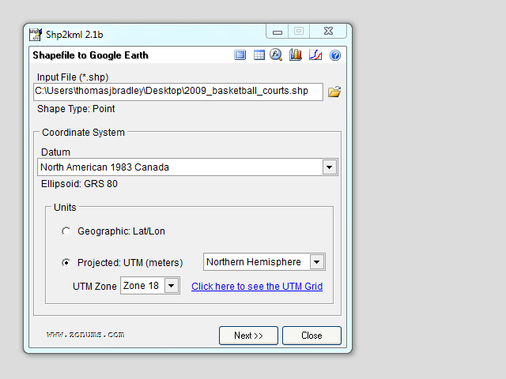
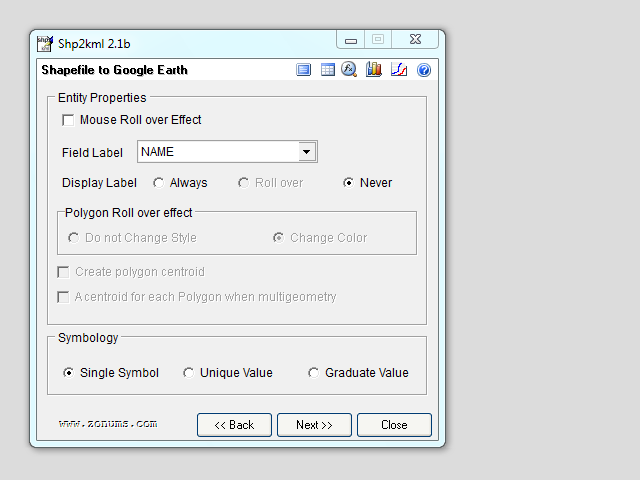
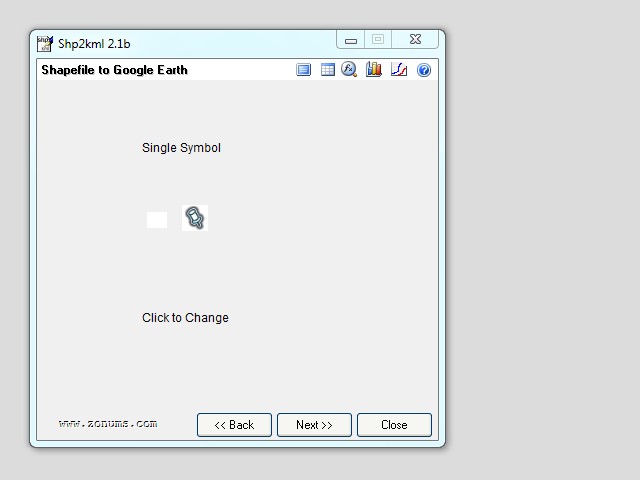
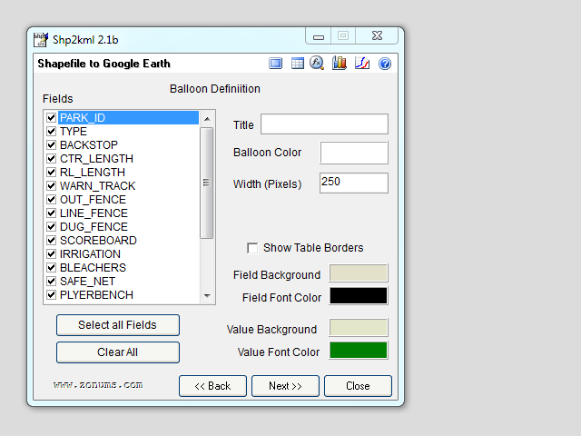
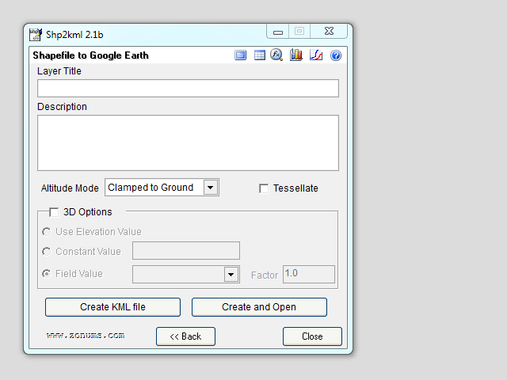

SHP to KML to MySQL
SHP to KML to MySQL
Download and extract the shp2kml application.
-

Select the SHP file for conversion and update the options.
- Choose the
SHP file.
- Select the proper datum to match the
SHP file.
- Update the units to match the
SHP file.
-

Select the correct field to represent the primary name of the place.
- Choose the right field for the name.
-

Ignore the symbol selection step.
- Just click
Next.
-

Select the fields you want included in the KML dataset.
-
Select all fields or check off only the ones you want.
-

Save the extracted KML file to the same location as the SHP file.
- Export the KML file.